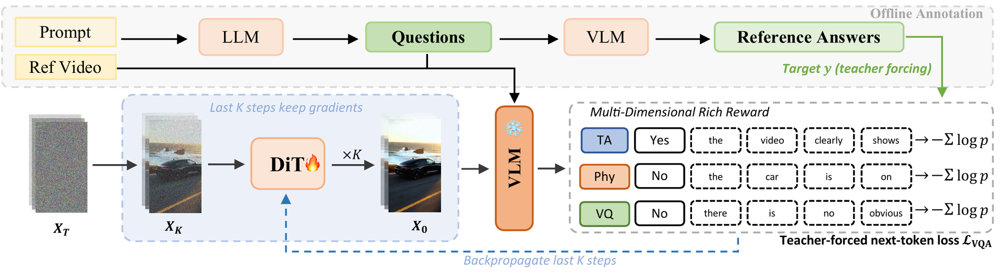
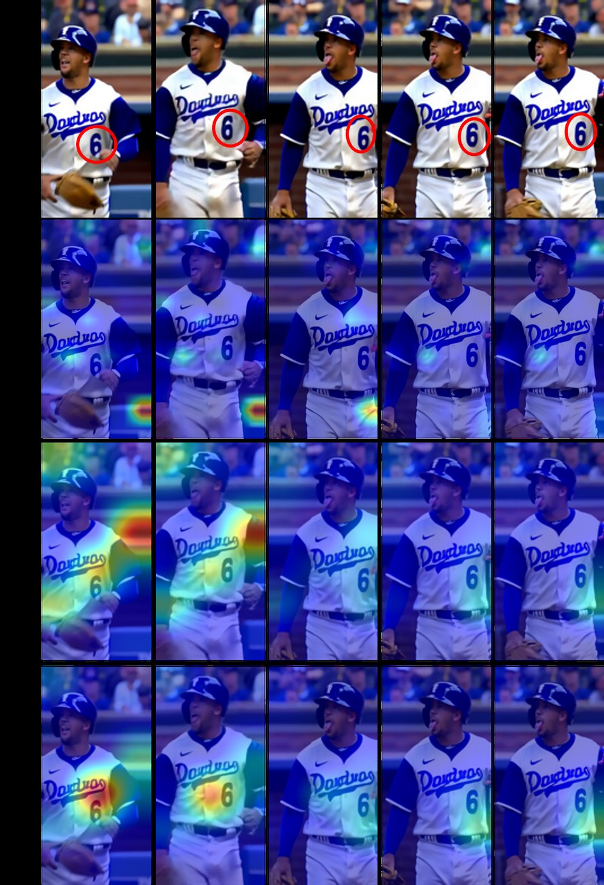
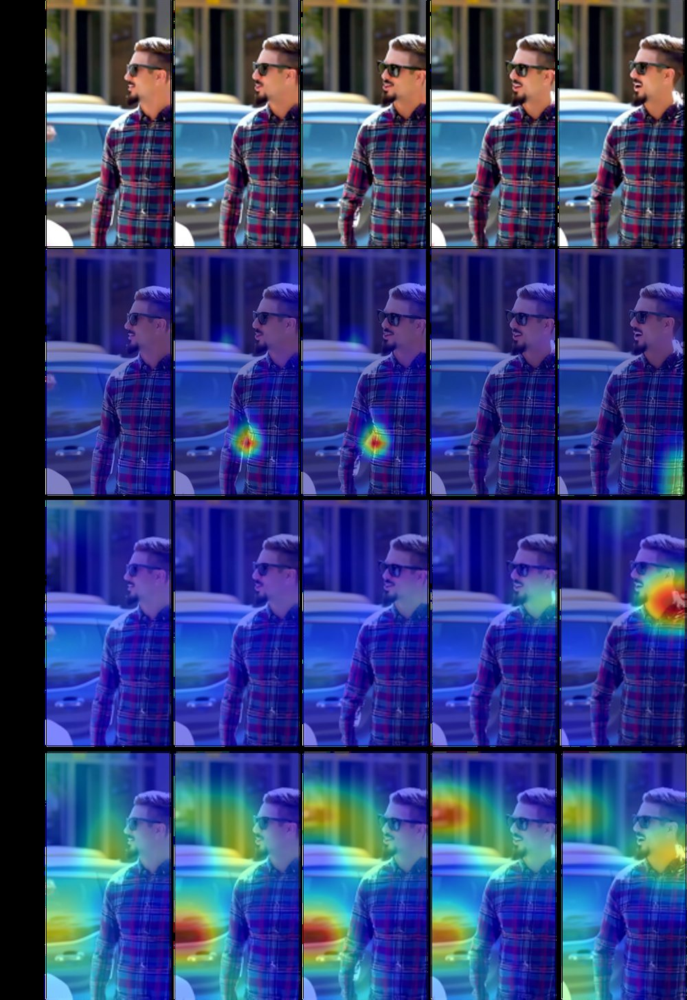

PromptAn extreme close-up of an gray-haired man with a beard in his 60s, he is deep in thought pondering the history of the universe as he sits at a cafe in Paris, his eyes focus on people offscreen as they walk as he sits mostly motionless, he is dressed in a wool coat suit coat with a button-down shirt , he wears a brown beret and glasses and has a very professorial appearance, and the end he offers a subtle closed-mouth smile as if he found the answer to the mystery of life, the lighting is very cinematic with the golden light and the Parisian streets and city in the background, depth of field, cinematic 35mm film.
Wan2.1-1.3B (base)Flow-GRPODiffusion-DRF
PromptA close-up of honey being drizzled onto pancakes, the thick liquid flowing slowly and smoothly.
Fine-tuning Wan2.1-1.3B with Diffusion-DRF improves text–video alignment (left) and physical fidelity (right) under challenging prompts. Baselines are trained on the same data; all videos share the same noise seed.
55.38VBench-2.0 overall: +2.39 over the base model, +1.83 over the strongest reward-tuned baseline
3Ktraining steps above the base model, where scalar rewards collapse within a few hundred
29 : 17human preference vs. the base model in a blind study (54% ties)
Abstract
Video diffusion alignment has been heavily reliant on scalar rewards. These rewards are typically derived from learned reward models in human preference datasets, requiring additional training and extensive collection. Moreover, scalar rewards provide coarse, global supervision, offering limited prompt-generation mismatch credit assignment and making models prone to reward exploitation and unstable optimization. We propose Diffusion-DRF (Differentiable Reward Flow), a free, rich, and differentiable reward framework for video diffusion fine-tuning, where "free" means free of reward-model training and of preference-data collection. Diffusion-DRF employs a frozen, off-the-shelf Vision-Language Model (VLM) as the critic, eliminating the need for reward model training. Instead of relying on a single scalar reward, it decomposes each user prompt into multi-dimensional questions with freeform dense VQA explanation queries, yielding information-rich feedback. Under teacher forcing, every answer-token loss conditions on the video, question, and a clean target prefix rather than prior model predictions; this non-compounding token supervision prevents answer errors from propagating into subsequent training contexts. By direct differentiable optimization over this rich feedback, Diffusion-DRF achieves stable reward-based tuning without preference datasets collection. Diffusion-DRF achieves significant gains both quantitatively and qualitatively, reaching 55.38 overall on VBench-2.0, 2.39 points above the base model and 1.83 points above the strongest reward-tuning baseline.
Method
A frozen vision-language model is the critic. Each caption is decomposed into structured Yes/No questions with free-form explanations along three dimensions, and the likelihood the VLM assigns to the reference answers is back-propagated into the generator.

Given a reference video and its caption as the prompt, Diffusion-DRF queries a frozen VLM with structured multi-dimensional questions spanning text–video alignment (TA), physical fidelity (Phy) and visual quality (VQ). For each query the VLM is scored on a Yes/No decision plus a dense explanation; the resulting token-level reward is back-propagated through the video decoder and the final K denoising steps to update the DiT.
1
Decompose the caption
A text-only LLM extracts the entities, attributes, motions and layout the prompt asks for and turns each into a targeted question. Physics and visual-quality queries compare the generation with a caption-matched real video.
2
Ask a frozen VLM
The reward is the teacher-forced likelihood of the reference answer and its explanation. Every token conditions on the video, the question and a clean prefix, so answer errors never compound.
3
Back-propagate the feedback
Gradients flow through the VLM, an efficient decoder and the last K denoising steps. Frame subsampling and activation checkpointing make this fit on a single 80 GB GPU per sample.
Where does the feedback point?
Reward gradients on the generated video. A scalar reward model (VideoAlign) and a single yes/no VLM query (Vanilla-DRF) spread their gradients diffusely; Diffusion-DRF concentrates them on the parts of the video that violate the prompt.

PromptA player, dressed in a white and blue uniform with number 66.

PromptThe video shows two men engaged in a conversation on a street.
Qualitative comparisons
Same base model, same training data, same noise seed. Highlighted phrases mark the prompt constraints that the baselines miss. Hover a video for controls.
Wan2.1-1.3B (base)Flow-GRPODiffusion-DRF
PromptA Samoyed and a Golden Retriever dog are playfully romping through a futuristic neon city at night. The neon lights emitted from the nearby buildings glistens off of their fur.
Wan2.1-1.3B (base)Flow-GRPODiffusion-DRF
PromptIn a cozy, sunlit room, an elderly man with silver hair and a gentle smile sits beside his curious grandchild, guiding small hands over an ancient wooden loom. The room is filled with the warm glow of sunlight streaming through a large window, casting intricate patterns on the floor and illuminating the vibrant threads stretched across the loom. The grandfather, wearing a soft, knitted sweater, patiently demonstrates the rhythmic motion of weaving, his experienced hands moving gracefully. The child, eyes wide with wonder, mimics the movements, their small fingers clumsily grasping the threads. Dust motes dance in the golden light, adding a magical quality to this tender moment of shared tradition and learning.
Wan2.1-1.3B (base)Flow-GRPODiffusion-DRF
PromptA skilled skateboarder, wearing a black hoodie and ripped jeans, navigates the bustling city streets, performing gravity-defying tricks with precision. The camera captures their every move, from the moment they launch into the air, executing a flawless kickflip, to the seamless landing on the pavement. The urban backdrop blurs, emphasizing the skateboarder's speed and agility. As they weave through the cityscape, the sound of wheels against concrete and the rush of wind create an exhilarating atmosphere. The skateboarder’s expression is one of focus and thrill, embodying the essence of freedom and adventure in the heart of the city.
Wan2.1-1.3B (base)Flow-GRPODiffusion-DRF
PromptA white and orange tabby alley cat is seen darting across a back street alley in a heavy rain, looking for shelter
Wan2.1-1.3B (base)Flow-GRPODiffusion-DRF
PromptThe video begins with a rapid zoom towards a vibrant red rose, its petals glistening with morning dew under soft sunlight. As the camera closes in, the intricate details of the petals become visible, revealing their velvety texture and delicate, layered structure. The rich crimson hue of the petals contrasts beautifully with the subtle green of the surrounding leaves. The camera continues to zoom, capturing the gentle curves and natural patterns etched into each petal, highlighting the rose's elegance and complexity. The scene concludes with an intimate close-up of the rose's heart, showcasing the intricate beauty of nature.
Wan2.1-1.3B (base)Flow-GRPODiffusion-DRF
PromptA sleek dolphin bursts from the ocean's surface, its body glistening under the sun, as the camera fluidly follows its graceful arc through the air. The dolphin's streamlined form cuts through the sky, droplets of water trailing behind like sparkling jewels. As it reaches the peak of its leap, the camera captures the joyful expression in its eyes, embodying the essence of freedom. The scene is alive with the sound of waves crashing, and as the dolphin dives back into the sea, the camera captures the explosive splash, sending shimmering sprays of water in all directions, encapsulating the playful energy of the moment.
Wan2.1-1.3B (base)Flow-GRPODiffusion-DRF
PromptA young woman with flowing hair sits gracefully at a grand piano on a sandy beach, her fingers dancing over the keys, creating a melody that harmonizes with the gentle waves. The camera begins to rotate around her, capturing her serene expression and the intricate details of her white lace dress. As it moves, the expansive ocean stretches endlessly, its surface shimmering under the soft, golden light of the setting sun. The sky is painted with pastel hues, adding to the whimsical atmosphere. Seagulls glide gracefully above, and the gentle breeze rustles her hair, completing the enchanting scene.
Wan2.1-1.3B (base)Flow-GRPODiffusion-DRF
PromptIn the crystal-clear depths of a vibrant coral reef, a majestic shark glides effortlessly, its sleek body moving with grace and power. The camera captures the fluid motion of its muscular form, the sharpness of its dorsal fin slicing through the azure water. Sunlight filters down, casting dappled patterns on the reef below, where colorful fish dart among the corals. The shark's powerful tail propels it forward with rhythmic precision, creating gentle ripples in its wake. Around it, a kaleidoscope of marine life thrives, from swaying sea anemones to curious sea turtles, painting a vivid picture of underwater harmony.
Wan2.1-1.3B (base)Flow-GRPODiffusion-DRF
PromptAn extreme close-up of an gray-haired man with a beard in his 60s, he is deep in thought pondering the history of the universe as he sits at a cafe in Paris, his eyes focus on people offscreen as they walk as he sits mostly motionless, he is dressed in a wool coat suit coat with a button-down shirt , he wears a brown beret and glasses and has a very professorial appearance, and the end he offers a subtle closed-mouth smile as if he found the answer to the mystery of life, the lighting is very cinematic with the golden light and the Parisian streets and city in the background, depth of field, cinematic 35mm film.
Wan2.1-1.3B (base)Flow-GRPODiffusion-DRF
PromptA close-up of honey being drizzled onto pancakes, the thick liquid flowing slowly and smoothly.
Single-prompt reward tuning
A controlled setting: the generator is tuned on one prompt for 100 steps under each reward. Learned scalar rewards drift in style or distort the scene without fixing the missing content; Diffusion-DRF corrects it.
BaseVideoAlignPickScoreDiffusion-DRF
PromptA man is preparing a meal. Sausages are accompanied by a green sauce and red tomatoes. The table holds pink bowl and a blue plate. The person is dressed in a blue shirt.
BaseVideoAlignPickScoreDiffusion-DRF
PromptThe video captures a serene lakeside scene during what appears to be either sunrise or sunset, two ducks are seen across the frame..
BaseVideoAlignPickScoreDiffusion-DRF
PromptThe video showcases a close-up view of a plate of seafood pasta, featuring linguine noodles mixed with shrimp, squid, and chunks of chicken. A fork is also visible on the left side of the frame.
More results
Wan2.1-1.3B (base)Diffusion-DRF
PromptA daring surfer clad in gleaming medieval armor expertly navigates a molten lava flow, the intense heat shimmering around him. The camera follows closely, capturing the surreal juxtaposition of metal against the fiery backdrop. His visor reflects the glowing red and orange hues of the lava, while the armor's intricate engravings glint in the volcanic light. As he maneuvers skillfully, the molten rock crackles beneath his board, sending sparks into the air. The camera captures every detail, from the heat waves distorting the air to the intense focus in his eyes, creating a breathtaking scene of bravery and elemental power.
Wan2.1-1.3B (base)Diffusion-DRF
PromptA poised model stands gracefully in a vibrant red silk dress, its glossy sheen catching the light with every subtle movement. The dress, with its smooth, shiny texture, cascades elegantly down her form, reflecting a spectrum of rich crimson hues. As she gently sways, the silk fabric ripples like liquid, accentuating its luxurious quality. Her confident stance and serene expression complement the dress's opulence, while the static camera captures the intricate play of light on the silk's surface, highlighting its lustrous, glossy appearance. The background remains understated, ensuring the focus remains on the model and the captivating allure of the dress.
Wan2.1-1.3B (base)Diffusion-DRF
PromptA couple strolls hand in hand down a bustling city street, their fingers intertwined, embodying a sense of unity and affection. The man, wearing a navy coat and jeans, walks confidently beside the woman, who is dressed in a stylish red trench coat and black boots. The street is alive with the sounds of distant traffic and the chatter of passersby, while the couple remains in their own world, exchanging smiles and glances. The static camera captures their every step, as they navigate the urban landscape, framed by towering buildings and vibrant storefronts, under a sky painted with the warm hues of a setting sun.
Wan2.1-1.3B (base)Diffusion-DRF
PromptA sleek black car glides smoothly along a winding coastal road, the camera capturing its every move with a handheld tracking shot. The sun casts a golden glow on the vehicle's polished surface, highlighting its aerodynamic design. As the car navigates sharp turns, the ocean waves crash against the rocky cliffs below, creating a dramatic backdrop. The camera follows closely, capturing the rhythmic motion of the wheels and the subtle reflections of the surrounding landscape on the car's glossy exterior. The scene conveys a sense of freedom and adventure, with the open road stretching endlessly ahead.
Additional Diffusion-DRF samples
Citation
@inproceedings{wang2026diffusiondrf,
title = {Diffusion-DRF: Free, Rich, and Differentiable Reward for Video Diffusion Fine-Tuning},
author = {Wang, Yifan and Li, Yanyu and Qian, Gordon Guocheng and Tulyakov, Sergey and Fu, Yun and Kag, Anil},
booktitle = {Advances in Neural Information Processing Systems (NeurIPS)},
year = {2026}
}